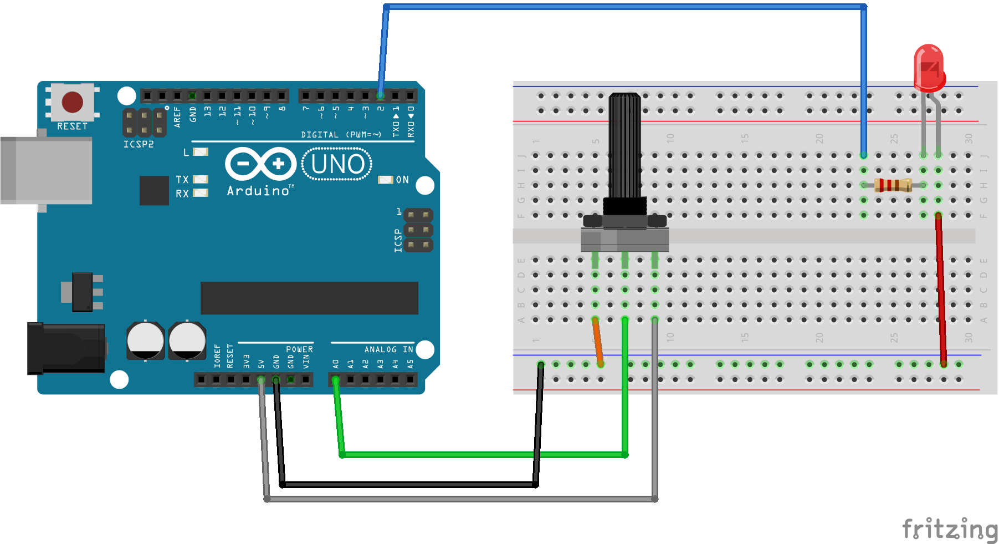

使用可變電阻器來控制 LED 開關

const int refVolts = 5;
// 使用 Arduino 板 5V 參考電壓
const int led = 2;
// LED 腳位 2
pinMode (led, OUTPUT);
// 設定 腳位 2 為輸出模式
digitalWrite (led, LOW);
// 關閉 LED
Serial.begin (9600);
// 初始化串列埠，傳輸速率為 9600 baud
val=analogRead (0);
// 讀取類比值電壓
volts=(float )val*refVolts/1024;
// 將數位值轉成類比值
Serial.print( "voltage=" );
// 印出"voltage="
Serial.print( volts, 2 );
// 印出類比電壓值 0.00 ~ 5.00
Serial.print( "V" );
// 印出"V" 跟 換行
if( volts > 4.00 )
// 如果類比電壓值 大於 4.00 以上
digitalWrite( led, HIGH );
// 點亮 LED 燈
digitalWrite( led, LOW );
// 關閉 LED 燈